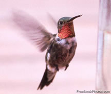

In the Beginning
Backyard Birds started as a weekend habit: long walks, a modest camera, and a growing fascination with the color and personality of local species. One photo turned into dozens, and those turned into a monthly email to friends who wanted to see “the latest visitor.”
As the library grew, we realized the images told a story about seasons and neighborhoods. We gathered our favorites into a small calendar for family gifts. The response was better than expected, so we produced a short postcard run for craft fairs and local shops. That little experiment is what people now know as Backyard Birds.

Where We Are Today
Today we publish a yearly calendar, a rotating postcard set, and a handful of small prints. We keep the focus close to home—most photographs are made within a day’s drive—so the collection feels familiar to anyone who lives or travels in Utah.
Alongside the photos, each calendar page includes a short note about the species: what to listen for, where you might spot it, and why the image mattered to us. Our goal is simple: make it easy to notice birds you might otherwise pass by.
Birds you’ll often find in our collections:
- Rufous hummingbirds
- Great blue herons
- American bald eagles
- Baltimore orioles
- California gulls
- Canada geese at sunrise

Where We’re Going
We’re currently expanding the postcard series and building a small online guide that pairs images with simple field tips. We’re also working with a few community groups to create classroom packs—prints, short captions, and prompts for nature journaling.
Backyard Birds will always stay small and personal. We shoot, edit, and package everything ourselves, and we share locations responsibly so local birds stay undisturbed.

Press Notes
“Quiet, beautifully printed photographs that make ordinary walks feel new again.” — Wasatch Weekend
“Accessible and local—exactly the kind of nature project our shop loves to stock.” — Kim R., Buyer, City Creek Market